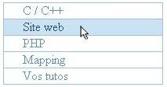
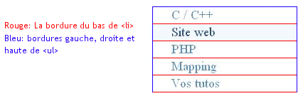
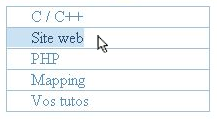

Bienvenue dans ce modeste tutoriel qui va vous apprendre à créer un menu jouant sur l'affichage des liens avec le pseudo-format hover et la propriété display ! :D
Je me permets de donner le code XHTML d'un coup car il est simple. :D En fait, c'est une page XHTML avec la balise style dans l'entête et une liste ul dans le corps. Pas franchement compliqué… :-°
Au préalable, puisque rien ne vaut un aperçu, voici une image de ce que nous allons apprendre à faire :

<!DOCTYPE html PUBLIC "-//W3C//DTD XHTML 1.0 Strict//EN" "http://www.w3.org/TR/xhtml1/DTD/xhtml1-strict.dtd">
<html xmlns="http://www.w3.org/1999/xhtml" xml:lang="fr" >
<head>
<title>Petit menu sympa</title>
<meta http-equiv="Content-Type" content="text/html; charset=iso-8859-1" />
<style type="text/css">
/* Ici on mettra le code CSS, mais vous faites comme vous voulez */
</style>
</head>
<body>
<ul id="sous_menu">
<li>
<a href="#">C / C++</a>
</li>
<li>
<a href="#">Site web</a>
</li>
<li>
<a href="#">PHP</a>
</li>
<li>
<a href="#">Mapping</a>
</li>
<li>
<a href="#">Vos tutos</a>
</li>
</ul>
</body></html>
Testez… Oui, c'est juste une liste sans style.
Maintenant que nous avons le code XHTML, il faut transformer cette liste de façon à recréer l'image du dessus. C'est notre mission et nous l'acceptons (enfin… moi oui ! :( ).
Comment faire ? Ce n'est pas magique, c'est Cascading Style Sheet !
On commence d'abord par se poser une question simple : quelles sont les difficultés du CSS ?
Les bordures : comment les afficher correctement ?
Comment créer un fond pour les liens qui prenne tout l'espace disponible dans la balise <li> ?
Je me dois d'insister sur un point : avez-vous bien compris le principe d'élément bloc (block) et d'élément en ligne (inline) ?
Si vous ne savez pas de quoi je parle, rendez-vous ici ou encore là (pour de plus amples renseignements). Vous ne voyez pas comment résoudre ces deux difficultés ? Ce tutoriel est vraiment pour vous !
Allons-y ! On va s'intéresser au code CSS.
Vous avez de la chance : il est court, et plutôt simple. :p
Le style de la liste
#sous_menu{
list-style-type:none; /* On enlève la puce */
margin: 0; /* On retire les marges intérieures et extérieures */
padding:0;
width: 20%; /* J'ai mis une largeur pour ne pas prendre toute la largeur de l'écran */
border : solid 1px #a3c0d5; /* On applique des bordures à la balise ul */
border-bottom: none; /* …et on retire celle du bas */
}
Testez au fur et à mesure, c'est important ! Ainsi, vous pourrez voir l'évolution. ;)
Ce qu'il faut retenir : je mets en place les bordures pour ul, et je retire la bordure du bas. Pourquoi ? Vous allez comprendre avec la suite du code :
#sous_menu li{
margin: 0; /* On retire les marges intérieures et extérieures */
padding: 0;
border-bottom: 1px solid #a3c0d5; /* Ici, on affiche une bordure uniquement en bas */
}
Cela commence à prendre forme, non ? :euh:
Vous remarquerez que j'ai retiré les marges par défaut de ul et li, pour deux raisons :
les différentes interprétations selon les navigateurs. :colere2: Initialisez les marges des listes (Firefox utilise un padding : 2.5em sur ul pour créer le retrait à gauche des listes, et IE, un margin : 2.5em) ;
les besoins de mon menu.
Maintenant, nous nous sommes attaqués à la balise <li>, et nous avons créé une bordure uniquement en bas.
L'astuce est là : si j'avais conservé la bordure du bas de ul, j'aurais eu deux bordures de 1px en bas, et donc une bordure de 2px… Et c'est très moche. J'espère que vous comprenez bien le principe (je fais comme si vous veniez de débuter le CSS). Pour les débutants, testez un peu ce que je viens de dire… C'est important de bien comprendre ce que l'on fait !
Allez, une petite image d'explication en bonus car ce n'est pas super clair :

Si vous affichez maintenant, c'est parfait !
Euh… oui, je ne parle que des bordures. :p Car pour les liens, ce n'est pas terrible. Nous allons remédier à cela.
Code CSS pour les liens
#sous_menu a{
text-decoration:none; /* On enlève le soulignement */
color:#5d90b5;
display:block; /* C'est ici qu'il faut bien comprendre (j'explique plus bas) */
padding-left:1.5em; /* Une marge intérieure gauche juste pour l'esthétique */
}
Et hop, on teste. Si, si ! :colere2: Maintenant, le survol, tout bête :
Pour les couleurs, c'est vous qui voyez ; moi, je ne me suis pas foulé. Si vous n'avez pas remarqué, ce sont des couleurs du SdZ… J'harmonise mon tuto avec le site… si ce n'est pas magnifique ! :lol:
Bon, et le code alors !
Explication : display:block
J'en reviens à la seconde difficulté : élément bloc, élément en ligne. Le souci ici est que a est un élément en ligne. Si donc je lui applique un fond qui s'affiche au survol, ce fond n'encadrera que l'espace nécessaire au texte du lien. Les éléments en ligne n'ont pas de dimensions propres (sauf les éléments dits « remplacés », ici encore). Testez si vous voulez, ça donne ceci sans le display:block :

Moche, non ? La solution pour qu'au survol du lien le fond de celui-ci prenne toute la largeur de la balise li, c'est alors d'utiliser la formidable propriété display (afficher en anglais) et de lui mettre comme valeur block. Ainsi, a va se comporter comme un élément bloc.
C'est-à-dire ?
Il va prendre tout l'espace disponible : 100 % de son conteneur donc ! Et voilà, passez votre souris sur le lien : tout le cadre est colorisé ! :magicien:
Vous remarquerez que sur IE, il faut être sur le texte du lien pour que le hover fonctionne (enfin, chez moi, c'est ainsi).
Secundo
Attention si vous voulez inverser l'affichage des bordures. Je m'explique. Il revient au même d'afficher toutes les bordures ul, sauf celle du haut, et d'afficher uniquement la bordure du haut pour li (l'inverse du code que j'ai donné). Si vous avez des difficultés à visualiser ce que je viens de dire, regardez l'image que j'ai donnée pour expliquer le principe des bordures.
Si c'est pareil, pourquoi il nous parle de ça ?
Pour vous expliquer ceci : c'est l'inverse, oui… mais cela ne marche pas avec Explorer ! Testez si vous voulez…
Pourquoi cela ne marche pas ?
En fait, c'est un bug ; je ne vais pas trop m'attarder sur ce sujet car je n'ai pas trouvé la raison exacte. C'est un bug d'IE sur la balise <a>, et apparemment ce bug existe aussi sur ul. Il peut également y avoir une histoire de fusion de marges… Enfin, toujours est-il qu'il y a un bug ! Cependant, si vous désirez utiliser ce code, vous pouvez tricher avec line-height, ou appliquer une hauteur de 100 % à la balise a.
Tertio
Si vous trouvez que les marges intérieures sont trop petites dans la balise a, ajoutez simplement un padding : 2px. Mais sur IE, cela ne fonctionnera pas bien, regardez vous-mêmes… Une des solutions est d'ajouter height : 100% à la balise a et cela fonctionne !
On finit avec un petit jeu
Comme je suis tordu, j'ai prévu un jeu : « Cherchez l'erreur » ! :diable: Dans l'image ci-dessous, il y a quelque chose d'impossible avec le code que j'ai donné :
Je vous laisse deviner, c'est tout bête (si vous aviez remarqué avant : bien joué !).
Voilà, c'est fini… J'espère avoir été assez clair. La quatrième sous-partie aurait dû être appelée « Petit complément pour… IE ». :p
Tout d'abord, je voudrais ajouter qu'il existe d'autres méthodes. Celle utilisée n'est donc pas la seule, ni la meilleure. Mais je la trouve plutôt cool ! :soleil:
J'aurais pu rendre ce tuto beaucoup moins long, mais il me semblait judicieux d'insister sur certains points. Je pense par exemple à la pratique des éléments en ligne et bloc. D'ailleurs, si vous n'avez pas encore bien saisi, allez sur alsacréations ou openweb… il y a de quoi faire ! Et n'oubliez pas : comprendre ce qu'est un élément en ligne et un élément bloc est une des clés du CSS…